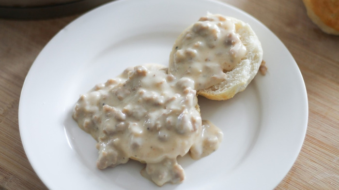

It’s no secret that a yummy homemade breakfast makes me excited to get up on Saturday morning. Our weekday breakfasts usually consist of plain old oatmeal or freezer breakfast sandwiches but on the weekends I like to make something much more fun!
This sausage gravy recipe is a TREASURE in our family, thanks to my mother-in-law. She’s made it so many times she has completely perfected the recipe, and now it’s one of our favorite breakfasts. I should issue a disclaimer that you’ll never want to order biscuits and gravy from a restaurant after trying this recipe. I know from experience that every other will pale in comparison. But the good news is that it’s just about one of the easiest things in the world to make. Pair it with my absolute favorite homemade, light and flaky buttermilk biscuits and you will be in heaven!
Not much to it, serve and enjoy!